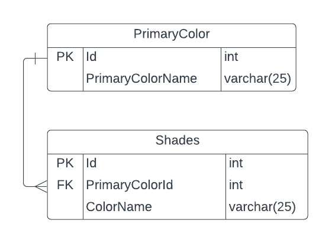

Colors Database
×
Colors ERD

ERD Description
Table PrimaryColor
- Tabel on põhivärvide nimekiri.
- Id on primaarvõti mille järgi värve saab leida, PrimaryColorName on vastav primaarvärvi nimi.
- Ei ole seoseid teiste tabelitega, on vaid tabeli enda Primary key.
Table Shades
- Tabel on sekundaarvärvide nimekiri, mis viitab teisele tabelile, et näidata, mis on kindla värvi primaarosa.
- Id on primaarvõti, PrimaryColorId on võõrvõti, ColorName on sekundaarvärvi nimi.
- On ühendatud PrimaryColor tabeliga, mis on siin võõrvõti, et saaks vaadata teise tabeli järgi, mis primaarvärv vastab sekundaarvärvile.
PrimaryColor
| Id |
PrimaryColorName |
| 1 |
Red |
| 2 |
Blue |
| 3 |
Yellow |
| 4 |
Green |
Shades
| Id |
PrimaryColorId |
ColorName |
| 1 |
2 |
Azure |
| 2 |
3 |
Lemon |
| 3 |
2 |
Cyan |
| 4 |
1 |
Salmon pink |
| 5 |
3 |
Mustard |
| 6 |
4 |
Honeydew |
| 7 |
4 |
Jungle Green |
| 8 |
1 |
Crimson |